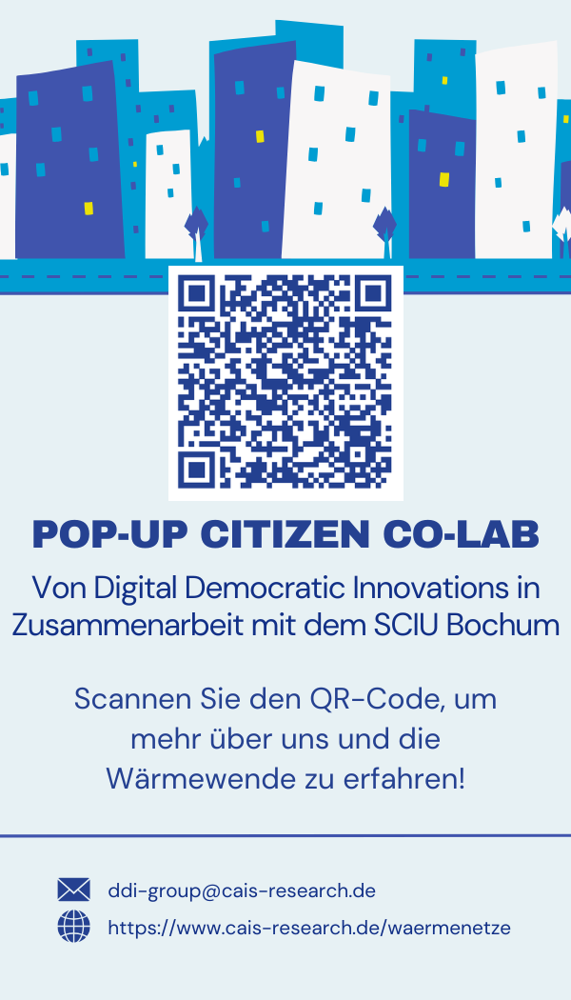
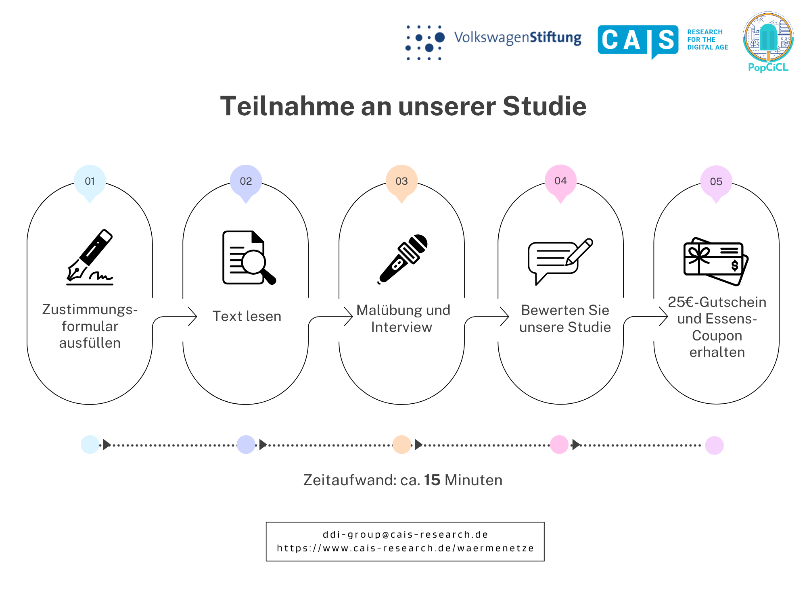

PopCiCL — Public Perceptions of the Energy Transition
Overview
Designed and implemented a research study on citizen acceptance of smart city initiatives and sustainable urban infrastructure (including heat grids), funded by the Volkswagen Foundation. The project explored how people form opinions about green technologies and which participation formats can reopen dialogue around energy infrastructure.
Timeline & Activities
Study Design & Preparation
Defined research questions on public perceptions and participation methods for the energy transition. Developed the study protocol and materials.
User Studies & Data Collection
Organized participatory events and surveys with citizens. Facilitated workshops and collected qualitative and quantitative data.




Qualitative & Quantitative Analysis
Coded interview data in MAXQDA and performed statistical analysis in R and Excel. Identified patterns in public acceptance and participation preferences.
Visualization & Communication
Translated findings into posters, slides, and accessible visual materials for diverse audiences.
Dissemination
Presented results at the IST 2025 conference and contributed to peer-reviewed publications. Shared outcomes with stakeholders and interdisciplinary teams.